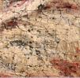
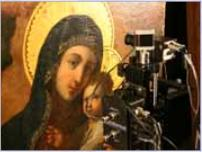
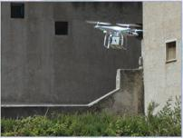
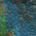
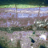
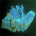
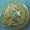
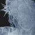
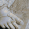

diagnostica e tecnologie per i beni culturali
diagnostica e tecnologie per i beni culturali


Progetto bilaterale di Grande Rilevanza Italia Serbia. All'interno dell'accordo di cooperazione Italia Serbia, per gli anni è in corso un
progetto bilaterale di innovazione
tecnologica, in cui l’Ars Mensurae è il
coordinatore generale di progetto.
Italia Serbia, per gli anni è in corso un
progetto bilaterale di innovazione
tecnologica, in cui l’Ars Mensurae è il
coordinatore generale di progetto.


La Decollazione del Battista di Antonio Pomarancio Nella Città della Pieve è stato mostrato alla
cittadinanza il dipinto restaurato La
Decollazione del Battista di Antonio
Pomarancio. In questa occasione si è
presentato il volume relativo alle indagini
scientifiche che hanno portato
all’importante attribuzione.
Drone per imaging sui Beni Culturali e
Ambientali
Il progetto di ricerca in corso in
collaborazione con l’Università di Palermo
C.G.A. (Centro Grandi Apparecchiature) ha
permesso all’Ars Mensurae di sviluppare
un drone per misure scientifiche sui Beni
Culturali e Ambientali.








 Laboratorio: via G. Aretusi 29 - 00188, Roma - cell. 3281925391 - P.IVA 07066721007
Laboratorio: via G. Aretusi 29 - 00188, Roma - cell. 3281925391 - P.IVA 07066721007